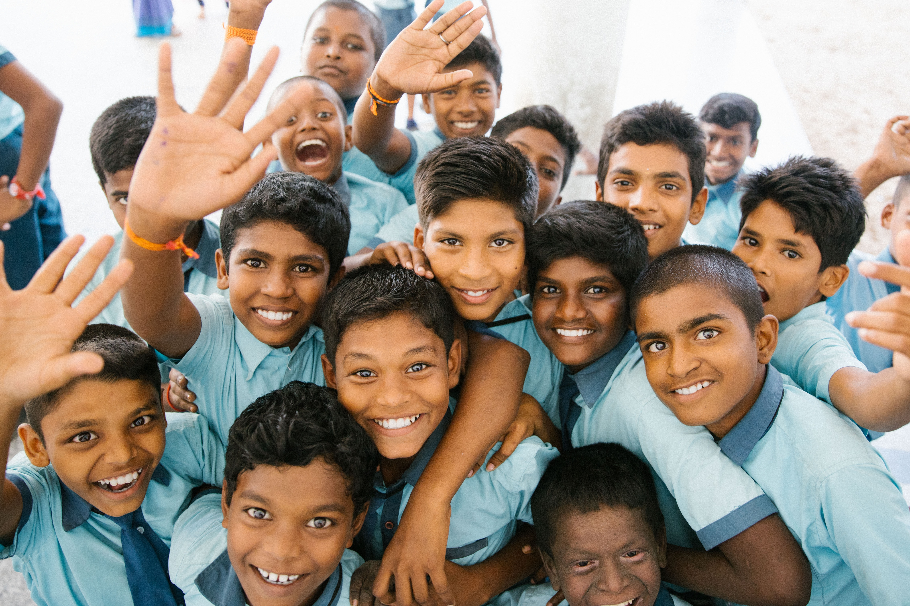

Învățătorul și disciplina

„Învățați-i, mustrați-i, încurajați-i, fiți îndelung răbdători.” Una din primele lecții pe care trebuie să le învețe un copil este aceea a supunerii. El poate fi învățat să fie ascultător înainte de a fi suficient de mare pentru a gândi abstract. Obiceiul ar trebui întipărit prin eforturi perseverente, pline de blândețe. Pot fi prevenite astfel într-o mare măsură conflictele de mai târziu dintre voința proprie și autoritate, conflicte care au un aport substanțial în crearea unei înstrăinări și ostilități față de părinți și educatori și, adesea, a unei împotriviri față de orice autoritate, omenească sau divină.
Obiectivul disciplinei este formarea copilului pentru autonomie. El ar trebui să fie învățat încrederea de sine și autocontrolul. De aceea, de îndată ce este capabil să priceapă, rațiunea sa ar trebui să fie îndreptată către supunere. Ori de câte ori tratăm cu el, să o facem în așa fel încât să arătăm că supunerea este un lucru corect și rezonabil. Ajutați-l să vadă că fiecare lucru este guvernat de câte o lege și că nesupunerea duce în cele din urmă la dezastru și suferință. Când Dumnezeu spune: „Să nu”, ne atrage atenția din iubire asupra consecințelor nesupunerii, pentru a ne scuti de vătămări și pierderi.
Ajutați-l pe copil să vadă că părinții și învățătorii sunt reprezentanții lui Dumnezeu și că, atâta vreme cât ei acționează în armonie cu El, legile pe care le fac aceștia în familie și în școală sunt și ale Sale. După cum se așteaptă de la copil să dea ascultare părinților și educatorilor, și ei au datoria, la rândul lor, să asculte de Dumnezeu.
Atât părintele, cât și educatorul ar trebui să caute să supravegheze dezvoltarea copilului fără a o împiedica printr-un control excesiv. Când nu le dăm suficientă libertate este la fel de rău ca atunci când ne ocupăm prea puțin de ei. Efortul de a „frânge voința” unui copil este o greșeală îngrozitoare. Fiecare minte are o constituție diferită; în vreme ce folosirea forței poate asigura o supunere exterioară, rezultatul obținut în cazul multor copii va fi acela al unei răzvrătiri mai ferme a inimii.
Chiar dacă părintele sau educatorul ar reuși să obțină controlul pe care-l dorește, efectul nu va fi mai puțin vătămător pentru copil. Disciplinarea unei ființe omenești care a atins anii în care poate raționa liber nu ar trebui să se asemene cu cea folosită în cazul unui animal necuvântător. Animalul nu este învățat decât să se supună stăpânului său. Pentru acel dobitoc, stăpânul reprezintă mintea, judecata și voința. Această metodă, folosită uneori în educarea copiilor, face din ei ceva doar cu puțin diferit de niște mașini automate.
Mintea, voința și conștiința se află sub controlul altuia. Scopul lui Dumnezeu nu este ca vreo minte să fie dominată în felul acesta. Cei care slăbesc sau distrug individualitatea își asumă o responsabilitate care nu poate avea decât efecte negative. Atâta vreme cât se află sub autoritate, copiii pot da impresia unor soldați bine instruiți; când însă controlul încetează, se va descoperi că duc lipsă de tărie și fermitate a caracterului. Pentru că nu a fost învățat niciodată să se conducă singur, tânărul nu discerne nici o limită în afara cerințelor impuse de părinți sau educatori. Când autoritatea acestora nu mai acționează, el nu știe cum să-și folosească libertatea și se dedă adesea la plăceri care îi vor constitui ruina.
De vreme ce supunerea voinței este mult mai dificilă pentru unii elevi decât pentru alții, învățătorul ar trebui să facă ascultarea față de cerințele sale cât mai ușoară cu putință. Voința ar trebui să fie călăuzită și modelată, nu ignorată sau zdrobită. Cruțați-le tăria voinței; vor avea nevoie de ea în bătălia vieții.
Fiecare copil ar trebui să înțeleagă adevărata forță a voinței. El ar trebui să fie călăuzit să vadă cât de mare este responsabilitatea implicată în acest dar. Voința este puterea stăpânitoare în natura omului, puterea de decizie sau de alegere. Fiecare ființă umană înzestrată cu rațiune are puterea de a alege binele. În fiecare experiență a vieții, cuvântul lui Dumnezeu pentru noi este: „Alegeți astăzi cui vreți să slujiți.” Iosua 24, 15. Fiecare își poate pune voința de partea voinței lui Dumnezeu, poate alege să se supună Lui și, unindu-se astfel cu puterea divină, poate rămâne pe un teren unde nimic nu-l poate forța să facă ceea ce este rău. În fiecare tânăr sau copil există, prin ajutorul lui Dumnezeu, puterea de a-și forma un caracter integru și de a duce o viață folositoare.
Extras din „Educație” de Ellen G. White, Capitolul „Învățătorul și disciplina”
Articole de același autor
COPII MAI MICI DE 7 ANI
Mamele care doresc ca băieții și fetele lor să aibă vigoarea sănătății ar trebui să-i îmbrace corespunzător și să-i încurajeze să stea mult timp în aer liber, ori de câte ori vremea permite acest lucru...
Natura ca învățător
Puterea influenței timpurii — de la trunchiul de copac contorsionat, diform, care a fost strâmbat pe când era doar o nuielușă fragedă, trunchi căruia nici o putere omenească nu-i mai poate reda după aceea simetria...

Alimentația copilului
Masa să fie atrăgătoare și apetisantă, căci este plină de lucrurile bune pe care Dumnezeu ni le-a dăruit cu atâta generozitate. Ora mesei să fie un moment fericit, de voioșie...
This is Something
Sed tristique purus vitae volutpat ultrices. Aliquam eu elit eget arcu commodo suscipit dolor nec nibh. Proin a ullamcorper elit, et sagittis turpis. Integer ut fermentum.
Also Something
Sed tristique purus vitae volutpat ultrices. Aliquam eu elit eget arcu commodo suscipit dolor nec nibh. Proin a ullamcorper elit, et sagittis turpis. Integer ut fermentum.
Probably Something
Sed tristique purus vitae volutpat ultrices. Aliquam eu elit eget arcu commodo suscipit dolor nec nibh. Proin a ullamcorper elit, et sagittis turpis. Integer ut fermentum.